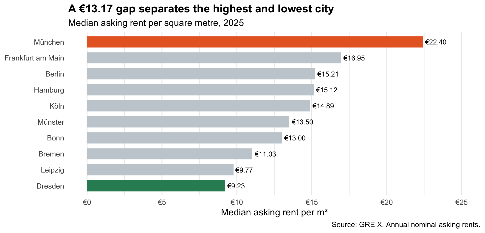
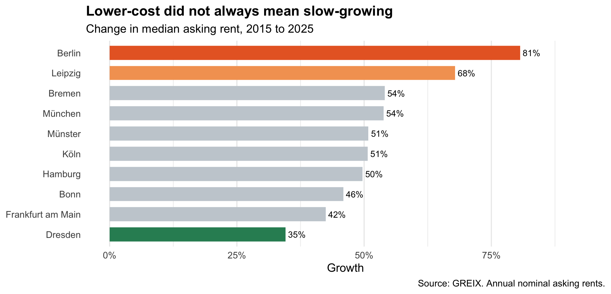
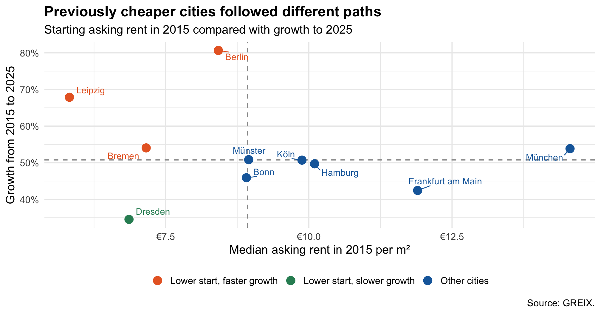
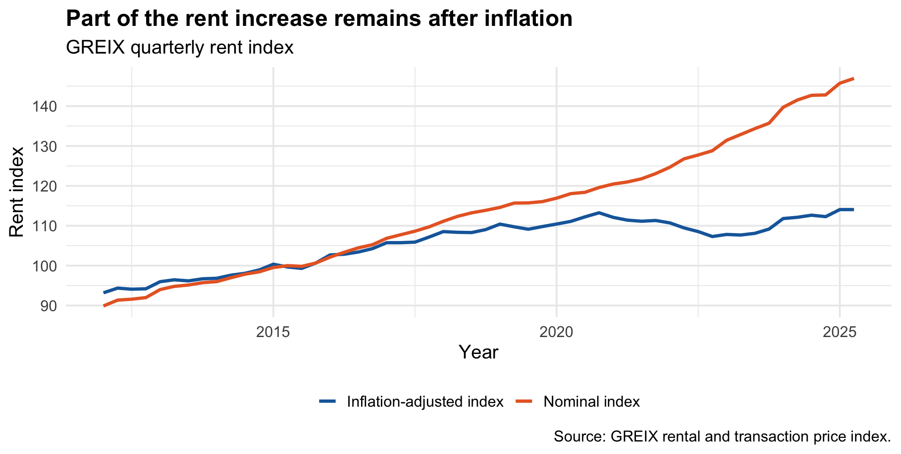
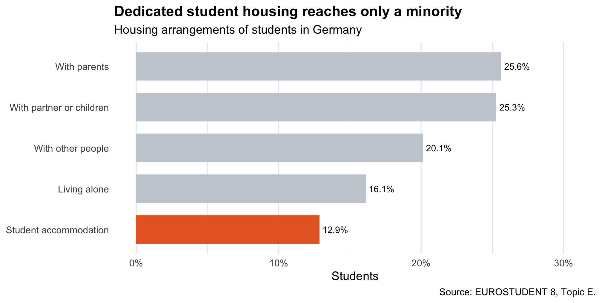

How changing rental markets affect students across university cities
A student choosing where to study does not enter one German rental market.
The student enters a specific city market, with its own rent level and rate of change.
We follow three questions:
Note
GREIX describes local rental markets. EUROSTUDENT provides the student-specific context. The datasets are interpreted together, but they are not merged row by row.
Median asking rent in 2025
Percentage growth from 2015 to 2025
Housing arrangements in Germany
We use annual observations and keep nominal and inflation-adjusted values separate.

Figure 1
Illustrative monthly base asking rent for 30 m²
Illustrative monthly base asking rent for 30 m²
Important
The illustrative monthly difference is approximately €395 before utilities and other costs.
A lower-cost city may appear affordable today while moving quickly towards a higher-cost market.

Figure 2

Figure 3

Figure 4
The rental-market evidence creates the pressure.
The student-housing evidence shows why the pressure matters.

Figure 5
Important
Students face unequal and changing local rental markets while dedicated student accommodation has limited reach.
Note
The project measures student housing pressure, not a complete city-level affordability ratio.
Main insight
Students enter sharply different private rental markets, and rapid rent growth in some previously cheaper cities means that lower-cost alternatives are becoming less secure.
Dedicated student accommodation reaches only a minority, making wider rental-market conditions important to the student housing story.
Felix Sandile Thwala and Sibahle Mabhuda
Visual Communication and Data Storytelling